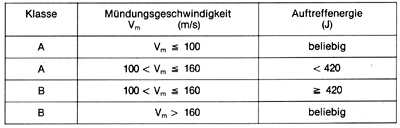

(1) Schußapparate im Sinne dieser Unfallverhütungsvorschrift sind tragbare oder nicht tragbare Geräte, aus denen durch Munition angetriebene feste Körper begrenzt oder ganz austreten.DA
(2) Tragbar sind Schußapparate, die nach ihrer Beschaffenheit dazu bestimmt sind, bei der Schußauslösung in der Hand gehalten zu werden. DA
(3) Nicht tragbar sind Schußapparate, die nach ihrer Beschaffenheit dazu bestimmt sind, bei der Schußauslösung nicht in der Hand gehalten zu werden. DA
(4) Bolzensetzwerkzeuge sind Schußapparate, die dazu bestimmt sind, Setzbolzen mittels Munition in feste Werkstoffe einzutreiben.
(5) Bolzenschubwerkzeuge sind Bolzensetzwerkzeuge der Klasse A.
(6) Bolzentreibwerkzeuge sind Bolzensetzwerkzeuge der Klasse B.DA zu Abs. 5 und 6
(7) Preß- und Kerbgeräte sind Schußapparate, die dazu bestimmt sind, Klemmteile oder Verbinder auf Kabel oder Drahtseile aufzupressen.
(8) Viehschußgeräte sind Schußapparate, die für die Betäubung von Schlachtvieh bestimmt sind.
(9) Leinenwurfgeräte sind Schußapparate, die zum Verschießen von Leinenraketen bestimmt sind.
(10) Kabelbeschußgeräte sind Schußapparate, die zum Eintreiben einer Schneide in Kabel bestimmt sind.
(11) Industriekanonen sind auf einem Gestell montierte Schußapparate, mit denen Geschosse zum Lockern oder Lösen festhaftender Massen in Industrieöfen oder zum Aufschießen der Anstichlöcher in Metallschmelzöfen abgefeuert werden.
(12) Probenschneider sind Schußapparate, die für das Herausstanzen von Proben aus festen Materialien bestimmt sind.
Unter Munition sind Kartuschen, hülsenlose Treibladungen oder Patronenmunition zu verstehen.
Feste Körper sind z. B. Setzbolzen, Schlagstempel, Schußbolzen.
Zu den tragbaren Schußapparaten zählen z. B. folgende Gerätearten:
Zu den nicht tragbaren Schußapparaten zählen z. B. folgende Gerätearten:
Die Klassen sind entsprechend der Dritten Verordnung zum Waffengesetz (3. WaffV) durch die Mündungsgeschwindigkeit und durch die Auftreffenergie definiert. Die Zuordnung ergibt sich aus untenstehender Tabelle:

Bolzentreibwerkzeuge dürfen nach § 4 nicht mehr verwendet werden.